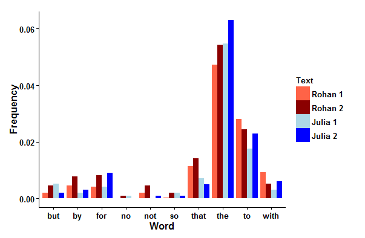
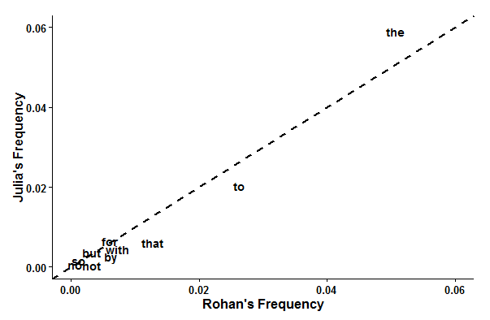
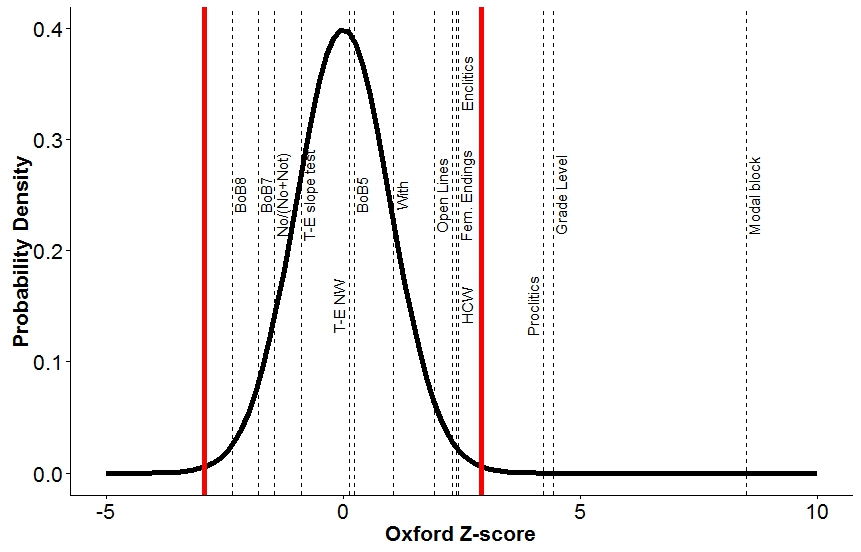
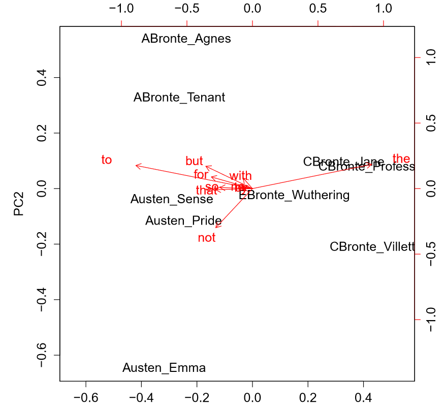
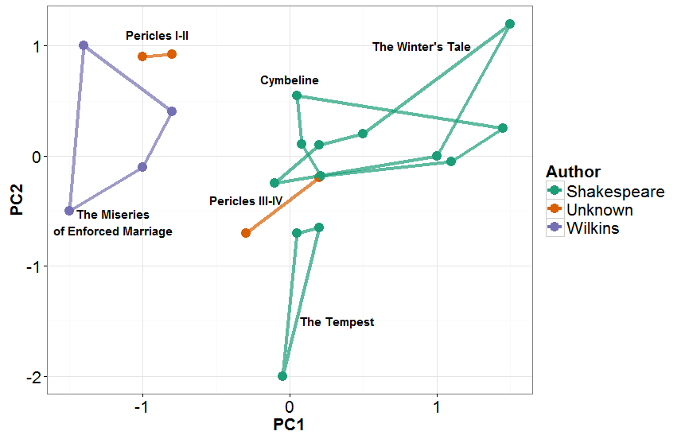

In 2013, a mystery novel called The Cuckoo's Calling---the debut novel of a man named Robert Galbraith---was published to little commercial fanfare but high critical praise. As you might expect, people started tweeting about how good they thought the book was, and a rogue spoiler agent responded to one of these tweets by claiming that the author was in fact the one and only J.K. Rowling. After a series of secretive tweets, the informant deleted their account, but the cat was out of the bag. Robert Brooks, the arts editor of the Sunday Times, got wind of this exchange and did some sleuthing of his own, eventually sending copies of this book, the last Harry Potter book, and Rowling's first post-Harry Potter literary venture (The Casual Vacancy) to computational linguists. They confirmed his suspicions: Robert Galbraith was indeed J.K. Rowling.
Most people would gloss over that second-to-last line up there, the one about computational linguists. But not you! No, you are curious. You want to know more. What did those people do to figure out that Galbraith was Rowling? More generally, how do researchers use computers to figure out who wrote what?
Let's take a quick stroll through a few of the things that go into computational author identification.
If we want to say "Text A is more likely to be the work of Author A than of Author B," then we need to find things we can measure from each text and compare. Statisticians like to call things we use to measure and compare two objects features. Features are often specific words, letters, or a specific sequence of words or letters. If we're counting word frequencies6 to compare texts, then we need to count words that are unaffected by the subject matter of the text and that the author has no conscious awareness of using. Good features can't be words that are too specific to the subject matter as they don't tell you much about the author's general tendencies. We also need to use common words so that we can have good statistical power. A simple example of a set of features is these ten words proposed by Gary Taylor in this book: but, by, for, no, not, so, that, the, to, and with.
Here I've constructed a little example using my previous post for this site, an early draft of the post you're reading right now, and two posts for this site by Julia Mason (whose permission I have for this analysis).
 
The bar graph plots the frequencies of Taylor's ten words for each text and the scatterplot shows the average frequency of each word in my posts against the average frequency of each word in Julia's posts. A word on the \(y=x\) line indicates that both our frequencies are the same for that word. Of these ten words, the words that would best distinguish between Julia and me are the (which I use less than Julia does), to, that, with, by, and not (each of which I use more than Julia does). We both use no, so, but, and for at about the same frequencies, which is interesting in its own right; did you expect any of these frequencies to be this close?
Now that we have a feel for what a feature is, we can move on to the main topic of this post: William Shakespeare. William Shakespeare is important and nearly omnipresent in the English-speaking world. Everyone who goes to an English-speaking school will read him; he is the most notable English author in history. People have spent an excessive amount of time studying the historical Shakespeare (as opposed to the literary Shakespeare), and that sort of attention coupled with the fact that he was born over four centuries ago has inevitably led to some controversy. The process of figuring out how much of what we attribute to Shakespeare was actually written by him (and vice versa) is ongoing. The computational aspects of this field have a long history, going back at least to the Claremont Shakespeare Clinic.
There are two kinds of debates about Shakespearean authorship: 1) those that posit alternatives to the historical Shakespeare himself and 2) those that acknowledge the existence of the historical Shakespeare and instead investigate potential collaborations with other authors and the origins of plays for which we have no authorship information. The former are mostly fringe theories and are primarily driven by the (very English) objection that a random commoner couldn't possibly be the greatest English writer of all time (for a detailed look into these anti-Stratfordian arguments1, see here). The latter, on the other hand, are quite important to the study of English literature. Both of these questions can be addressed by computational techniques and I will discuss one example of each.
One of the most historically popular alternative authors of Shakespeare is Edward de Vere, Earl of Oxford (proponents of this hypothesis call themselves "Oxfordians"). Most of the constructive arguments in de Vere's favor are based on autobiographical parallels between events in de Vere's life and events that are discussed in Shakespeare's work. These arguments are on the fringe of serious academic discussions about Shakespeare and it is unlikely they will ever gain any sort of mainstream traction4. I will discuss one such study here, carried out by the two faculty advisors of the Claremont Shakespeare Clinic: Ward Elliott and Robert Valenza.
Elliott and Valenza first came up with a hodgepodge of 14 features to compare texts by Shakespeare and de Vere. These features included frequencies of different sets of words, structural features - like whether or not a line ends with punctuation, and complicated functions of word frequencies and sentence structure; this footnote has a full list5.
Each work by a particular author might have a slightly different value for each feature. Romeo and Juliet might use the word wherefore more than Twelfth Night. Just comparing frequencies of each feature in each work between Shakespeare and de Vere wouldn't really work; maybe Romeo and Juliet uses wherefore as frequently as de Vere does, but Shakespeare in general uses the word much less. We need to look at the distributions of the values of each feature for both authors over all their work. In this case, Elliott and Valenza assumed that the features were normally distributed for each author. That is, if you plot a histogram of the values of a particular feature for one of the authors for each work, you get a bell curve.
So what happens if you just pick a feature and put the bell curves for each author on the same graph? If Shakespeare and de Vere were secretly the same person, the two bell curves would probably be on top of each other. If Shakespeare and de Vere were in fact different people, the two bell curves would overlap less (ideally they wouldn't overlap at all, but because they were both Elizabethan-era poets, their styles aren't going to be extremely different). How little overlap is necessary before you can say that the two authors were probably different? To answer this question, you need a statistical test. This excellent video by Guillaume Riesen---another member of Team Forty-Two---is a nice introduction to statistical tests and p-values.
Elliott and Valenza used a series of z-tests to test the hypothesis that de Vere is Shakespeare. A z-test compares the centers (the averages) of the two bell curves to see if they are far enough apart to say that the two authors are different. To use the z-test, we need to find how far de Vere's average is away from Shakespeare's average, with distance measured in standard deviations of the Shakespeare bell curve. If the de Vere average is at least 2 standard deviations away from Shakespeare's average, then we can say that de Vere is different from Shakespeare and we would be right about 95% of the time (this is a property of the normal distribution).
Now, this 95% rate only holds if you use a single z-test to come to a particular conclusion. Elliott and Valenza performed fourteen tests. Even if de Vere and Shakespeare were the same, we would expect some of the fourteen features to just by chance end up with a separation bigger than 2 standard deviations between the bell curve centers (in the same way that it's much more likely to roll a 1 when you roll 10 dice than when you roll just a single die). In fact, since each test has a 5% chance of a mistake, you would expect about 0.7 mistakes in every fourteen tests. So you can't just say that de Vere and Shakespeare are different if any one of those fourteen tests comes up with a center distance bigger than 2. You have to correct for the use of multiple tests. In this case, we will use the Bonferroni correction2. This correction assumes that the results of one test tell us nothing about the results of any other test (which is very likely false in our example because there are several tests which may look at the same words). This assumption makes the Bonferroni correction a "better-safe-than-sorry" test; if we know something about how the features are related to each other, then ideally we should use that information, but if we don't, then it's safe to use this correction. Anyways, the correction entails dividing the target error rate (5%) by the number of tests (14) to get a new target error rate (0.35%). Ensuring that we will make a mistake only 0.35% of the time requires us to only say that de Vere is different from Shakespeare when the distance between the two bell curve centers is bigger than 2.92 standard deviations.

This rather busy plot shows the Shakespeare bell curve with the de Vere averages for all fourteen features in dashed vertical lines (for each feature, the Shakespearean bell curve and the de Vere average are shifted to zero and each value is divided by the standard deviation of the corresponding bell curve so that we can compare between authors properly). The two big red lines are at +/-2.92; if any dashed line falls outside of the region between the two red lines, we can reasonably say that de Vere is not Shakespeare. Indeed, we have three tests that fall outside the red lines. Oxford had a tendency to write shorter, less complex sentences than Shakespeare, used fewer constructions like 'twas than Shakespeare, and differed quite significantly from Shakespeare in the usage of certain words. Therefore, we can conclude that Shakespeare was probably not Oxford.
You may have noticed that most of the fourteen tests carried out by Elliott and Valenza were not useful for distinguishing between the two authors (the bell curves were too close together). This is a basic problem in statistical analysis: if you measure a lot of different things, some of them are not going to be useful. Even in the first example, Julia and I use four of the ten words in approximately the same frequency.
There are generally two solutions to this problem: 1) model selection---in which variables are added or thrown out systematically, and 2) dimensionality reduction---in which a small set of new variables are created from all of the old ones (all the measurements) in such a way that as much of the important information contained in the old variables as possible is preserved by the new variables. We might use dimensionality reduction to try to find combinations of the old variables that are more useful than just looking at the old variables separately. One example of the dimensionality reduction strategy is called principal component analysis, or PCA.
PCA creates new variables (called "principal components") from the old ones by a process outlined in this box, which you can skip if you want - it gets a bit technical:
We want to find the linear combination of the measured quantities that has the maximum variance over the data. Suppose you have \(n\) samples and \(p\) measurements per sample (in our case, there could be \(n\) texts and \(p\) different word frequencies). For all samples \(x_i\) we want to find a unit vector \(z\) such that the variance of \(y_i = \sum\limits_{j=1}^p z_{j}x_{ij}\) is maximized. If we write all these values in matrix form (i.e. write down all \(n\) samples at once) then we obtain the first principal component : \(z = \max\limits_{||z|| = 1}\sum\limits_{i=1}^n (z_i \cdot x_i)^2 = \max\limits_{||z||=1}||Xz||^2 = \max\limits_{||z||=1}z^TX^TXz\). Because \(z\) is a unit vector, the rightmost quantity is maximized when \(z\) is the eigenvector of \(X^TX\) that corresponds to the largest eigenvalue of \(X^TX\) (if you multiply a matrix \(X\) by some vector \(v\) and you get a multiple of the vector \(\lambda v\), then \(v\) is an eigenvector of \(X\) and \(\lambda\) is the corresponding eigenvalue.) The first principal component is what you get when you multiply the data by the eigenvector. It is relatively easy (for a computer) to find eigenvalues and eigenvectors of matrices, so the actual calculation is simple. You can subtract the principal component values of the data (\(y_i\)) from each \(x_i\) and then do the analysis again to obtain the next principal component, and continue this process as long as you want. If all goes well, the first few principal components will capture most of the variation in the data and you can just look at those.
The number of principal components is the same as the number of old variables. Most of the time, however, the first few principal components will tell most of the story. A common thing to do is to plot the first two principal components and see how the data clusters (this would be like plotting the frequency of "and" against the frequency of "the", but instead of the word frequencies you plot the first two principal components). Data points that are close together in this plot are similar in their values of each of the variables you've measured (according to the principal components).
As an example, plotted below are the first two principal components for 9 English novels of the 19th century: Emma, Pride and Prejudice, and Sense and Sensibility by Jane Austen, Agnes Grey and The Tenant of Wildfell Hall by Anne Bronte, Jane Eyre, The Professor, and Villette by Charlotte Bronte, and Wuthering Heights by Emily Bronte. I used Taylor's 10 function words (see above) as features. The data from this example and some useful functions come from the stylo package for the programming language R.

As you can see, the authors cluster together pretty well, even with this somewhat arbitrary set of features. The red arrows are vectors whose x-components are the values of the corresponding feature for the first principal component and whose y-values are for the second principal component. The first principal component primarily uses "the" and "to" and primarily separates Charlotte Bronte from everyone else (C. Bronte apparently favors "the" and disfavors "to" compared to everyone else). The second principal component primarily uses "but" and "not" and does a decent job separating Anne Bronte from everyone else (A. Bronte apparently favors "but" and disfavors "not" compared to everyone else). Jane Austen seems to have the opposite tendencies to Anne Bronte with regards to "but" and "not" and Emily Bronte might be what you get if you average all these other authors together, though we only have one sample from her so there's not too much we can say.
Let's close this section with Shakespeare. The play Pericles3 is associated with both Shakespeare and his contemporary George Wilkins. José Nilo Binongo and Wilf Smith used PCA compared to a full work of Wilkins (The Miseries of Enforced Marriage) and three works of Shakespeare (The Tempest, Cymbeline, and The Winter's Tale) to see where the four acts of Pericles fall. The results are reproduced in the next figure.

These results strongly suggest that Wilkins wrote Acts I and II of Pericles and Shakespeare wrote at least most of the rest, a result which has been corroborated elsewhere.
All the topics discussed in this post are examples of stylometry (applications of the linguistic subfield of stylistics). Identifying authorship is far from the only application of computational stylometric techniques. People have used computational stylometry to detect plagiarism, filter spam, and decipher languages. What I have discussed in this article is only the tip of the iceberg7. If you are interested in reading more about this subject, I suggest starting with this textbook, which works well as a sampler of the questions asked and of the techniques used in the field. The field is moving towards using more machine-learning techniques that are more sophisticated than the methods presented in this post.
The amount of data we can collect from texts can be quite daunting. You can find frequencies of every word in the text, tabulation of higher level sentence structures, and more. Each sample can have an enormous number of observations. This situation is characteristic of a phenomenon you might have heard of called big data, in which the sheer scale of the data we can collect has created new challenges and forced us to develop new techniques to combat these challenges. The future of computational stylometrics may depend as much on advances in statistics and computer science as it does on advances in applied linguistics. A whole new universe of possibilities for analysis and understanding opens up---even in a resolutely anti-quantitative subject like literature---if you just do the math.
Named after Shakespeare's birthplace, Stratford-upon-Avon. ↩
Actually introduced by statistician Olive Jean Dunn but named because it uses Bonferroni inequalities. ↩
Ben Jonson, another contemporary of Shakespeare who was often painted as his rival, did not like this play. In one Ode to Himself (he had several) he gets very irritated at the lack of sophistication of contemporary audiences:
No doubt a moldy tale like Pericles, and stale As the shrive’s crusts, and nasty as his fish, ... May keep up the Play Club. ... For who the relish of these guests will fit Needs set them but the alms-basket of wit.
Despite apparently convincing several former members of the US Supreme Court. ↩
Elliott and Valenza computed these z-scores for 14 different features:
1. Grade Level: Calculated by a program called Grammatik, this is a function of word and sentence length and is supposed to be in units of school grade level. The previous sentence, for instance, has a grade level of approximately 11. Microsoft Word can perform a similar calculation.
2. Hyphenated compound words (HCW; like cold-blooded, which Shakespeare invented).
3. Open lines, which are lines that don't end in any punctuation
4. Enclitics, which are things that change if they interact with the previous word (like have turning into 've after we in we've).
5. Proclitics, which are things that change if they interact with the next word (like it turning into 't before was in 'twas).
6. The proportion of no and not taken up by no.
7. The word with if it is the second-to-last word of a sentence.
8. Bundle of Badges 5 (BoB5): A comparison of the frequencies of a set of words that Shakespeare favors vs a set of words that Oxford favors. This particular bundle contains the Shakespeare words the, is to, you, he, his, your, we, him, as, and an vs the Oxford words A, Sir, I, now, I'll, 'tis, all, come, and her. One might find these sets from analyses similar to those of Figure 1.
9. BoB7, another Bundle of Badges
10. BoB8, another Bundle of Badges
11. T-E slope test: a statistical test from Thisted and Efron (1987) that is a little too complicated to go into here.
12. T-E NW: another statistical test from Thisted and Efron (1987) that is a little too complicated to go into here; the "NW" stands for "New Word".
13. Modal Distance: A measure of how underused or overused is a particular set of 52 keywords (from Elliott and Valenza (1991)).
14. Feminine endings (lines with unstressed endings). For an example of this rather sexist terminology, consider the following four lines from from "Spring and Fall (to a young child)" by Gerard Manley Hopkins (one of my favorite poets). The first two have feminine endings and the last two have masculine endings.
Ah! ás the heart grows older It will come to such sights colder By and by, nor spare a sigh Though worlds of wanwood leafmeal lie
The field has since moved on to more sophisticated feature choices, but we'll stick to the basics here. ↩
Speaking of tips of icebergs, most of computational linguistics is not at all related to stylometry; the field is primarily concerned with natural language processing. ↩